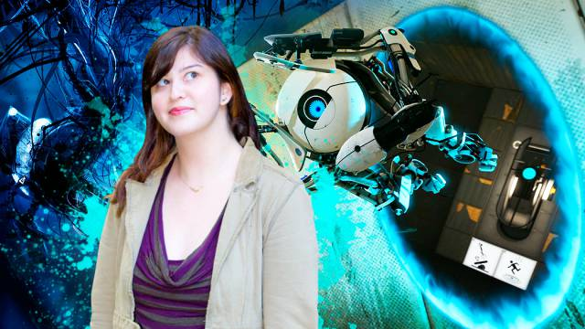
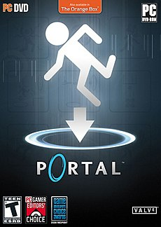

Kimberly Swift é uma designer de videogame que nasceu em 1982, nos Estados Unidos. Ela se formou no Instituto de Tecnologia DigiPen, e é mais conhecida por seu trabalho na empresa de desenvolvimento de videogames “Valve”.
Kim foi apontada pela revista Fortune como uma das figuras mais influentes na indústria de videogames, e descrita pela revista online Mental Floss como uma das mulheres mais reconhecidas nesta indústria.
Kimberly, desde o 1º ano do ensino médio, tinha o desejo de fazer videogames. Seu pai apresentou a Universidade DigiPen a ela. Swift frequentou a instituição, e lá trabalhou, junto com outros colegas e artistas no jogo Narcabular Drop, um videogame baseado em portais.
O jogo foi apresentado à Valve, corporação que desenvolve, edita e distribui videogames, e eles adoraram o jogo. Kim foi contratada pela empresa, com a função de fazer o design de níveis, assim como liderar a equipe do jogo Portal. O jogo é até hoje considerado como um dos melhores da década, se não, um dos melhores de todos os tempos, e graças a ele, Swift ganhou o Game Developers Choice Awards por design, e até mesmo o prêmio de Jogo do Ano.
Ainda na Valve, Kimberly também participou do desenvolvimento dos clássicos Left 4 Dead e sua continuação, Left 4 Dead 2, com papel de líder em ambos.
No fim de 2009, Kim deixou a Valve e ingressou na desenvolvedora Airtight Games, onde, juntamente com a empresa Square Enix, liderou o desenvolvimento do jogo Quantum Conundrum, que foi lançado em 2012.
Em abril de 2014, Swift ajudou a Amazon a criar jogos em seu estúdio interno, onde ela teve o papel de designer sênior.
No começo de 2017, a empresa de videogames Electronic Arts contratou Kim, para que ela fosse a diretora de design do Motive Studios, estúdio da EA. Lá, ela participou do desenvolvimento de Star Wars Battlefront II.
Ela participou do estúdio de desenvolvimento interno do Google Stadia, até que ele foi fechado em fevereiro de 2021.
Em junho do mesmo ano, Kimberly foi contratada pela Xbox Game Studios como diretora sênior, onde ela liderou trabalhos voltados para Nuvem.
Por fim, em 18 de março de 2020, Kim Swift apresentou a 20º cerimônia do Game Developers Choice Awards.
Swift é reconhecida por suas diversas inovações na indústria de games dos Estados Unidos.
Diferente de muitos desenvolvedores que veem videogames como obras de artes, ela os vê como brinquedos, que permitem que qualquer um, até adultos, usem sua imaginação. “Eles nos permitem ser crianças novamente. O que é ótimo sobre os jogos, em particular, é que é uma maneira socialmente aceitável para os adultos imaginarem.”, como diz Kim. Em seus jogos, especialmente Portal, ela pretende que o usuário viva uma aventura num mundo fantasioso, que faz com que mesmo os mais velhos usem sua imaginação, e “brinquem com brinquedos” sem medo.
Kim, como designer-chefe de Portal, fez uso da narrativa e de recursos extradimensionais de passagem para envolver seu público. Portal foi um jogo que revolucionou o mercado de games, mostrando a outros desenvolvedores que games com valores de produção altos, ideias fascinantes e preços altos podem ser bem sucedidos. Portal é uma representação deste sucesso, tendo vendido mais de 4 milhões de cópias, e o Museu de Arte Moderna o selecionou como um dos 14 jogos que devem ser incluídos em sua coleção permanente.
Em uma entrevista, Swift disse “os jogos parecem ser divididos em duas categorias, ou são jogos infantis e têm uma barra de produção baixa e não têm muito para os adultos se divertirem com. Ou eles são um jogo de grande orçamento com muita substância, mas muita violência que não é apropriado para crianças. Acho que há um meio-termo feliz onde há um pouco de algo para todos, como um bom filme da Pixar. Eu definitivamente espero tentar fazer jogos mais acessíveis para um público mais amplo.”
As inovações de Kim ainda estão no mercado, e por mais que alguns jogos não sejam tão bem-sucedidos quanto outros, muitos ficam para sempre no coração dos jogadores, como Portal, que ainda hoje tem seus conceitos e ideias sendo usados de base para o desenvolvimento de videogames.
